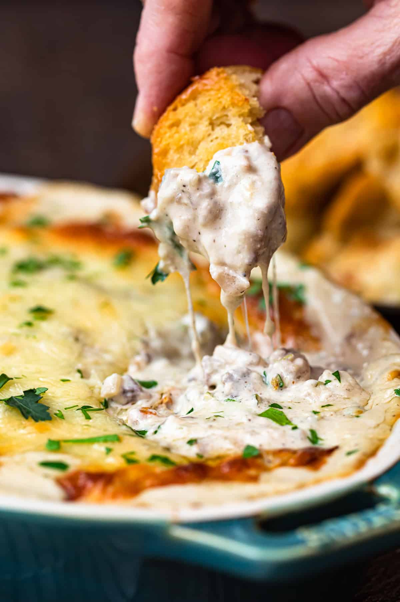

Home

This easy recipe can you make when you have company or when you just wanna feel the cardiac arrest.
- 1 pound beef top sirloin steaks
- salt and freshly ground black pepper to taste
- 1 tablespoon olive oil
- 1 yellow onion, diced
- 1 tablespoon butter
- 1 red bell pepper
- 1 green bell pepper
- ½ cup pepperoncini peppers
- 7 pickled red peppers (such as Peppadew)
- 3 jalapeño peppers
- 2 (8 ounce) packages cream cheese, softened
- ½ pound provolone cheese
- ½ teaspoon Worcestershire sauce
- 1 pinch cayenne pepper
- slice steak into thick pieces. Season generously on both sides with salt and pepper.
- Heat olive oil in a pan over high heat until smoking. Add steak slices and sear until bottoms are browned, 3 to 4 minutes. Flip over and reduce heat to medium. Cook until juices appear on the tops, 3 to 4 minutes more. Transfer to a bowl to cool.
- Add diced onion, a big pinch of salt, and butter to the meat juices in the pan. Cook and stir over medium heat, scraping up the browned bits, until onions start to soften, 5 to 7 minutes.
- Dice up the red bell pepper, green bell pepper, pepperoncini, pickled red peppers, and jalapenos until you have 1 1/2 to 2 cups. Add to the onions; cook and stir until starting to soften, about 5 minutes.
- Preheat the oven to 400 degrees F (200 degrees C).
- Chop steak into small pieces. Place back into the bowl with the accumulated meat juices. Add the onion-pepper mixture and cream cheese. Grate in the provolone cheese, saving a little for the top. Drizzle in Worcestershire sauce and sprinkle in cayenne pepper. Mix dip thoroughly.
- Transfer 1/2 of the dip into a small baking dish. Smooth the top with a fork. Place baking dish on top of a sheet pan. Sprinkle the remaining provolone cheese on top. Save the other 1/2 to bake fresh for your guests.
- Bake in the preheated oven until dip is bubbling and heated through, 20 to 25 minutes. Broil until top is browned, about 1 minute more. Repeat with the second batch of dip.